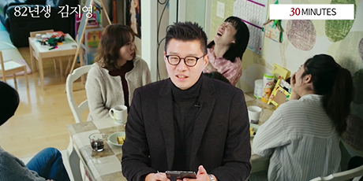

착한 기업에 투자하는 움직임, ESG 투자
투자업계에 종사하거나 투자에 관심이 많은 독자라면
여기저기서 ‘ESG 투자’ 라는 말을 들어본 적이 있을 것이다.
그 정도로 투자 세계에서 ESG 투자는 가장 주목 받는 토픽이다.
아직 잘 모르는 독자들을 위해 간단하게 설명하겠다. ESG는 환경(Environmental), 사회(Social), 지배 구조(Governance)를 의미한다. 한마디로 ESG 투자란 세 가지에 좋은 영향을 주는 기업을 골라 하는 투자를 의미한다.
왜 이 세 가지가 주요 관심사가 되었을까? 이와 관련된 문제를 일으킨 기업들의 사례를 투자자들은 많이 경험했기 때문이다. 하나하나 짚어보자. 일단 환경은 우리가 살고 있는 생활 터전을 오염시키고, 이로 인해 더 나아가 생태계에 문제를 일으킨다던가 인간의 목숨까지 위협할 수 있는 일들이 있었다. 투자자들은 우선 이런 문제를 ...

Everyday Finance
미국 세인트 루이스 연방정부은행에서 필수적으로 알아야 한다고 정한 금융 상식을 바탕으로, 한국의 실정에 맞게 재편성한 강의입니다. 필수 경제금융 상식을 마스터 할 수 있습니다.
문화로 읽는 경제금융
"82년생 김지영"
젠더 갈등이라고 하는 주제로 이 영화를 소비하면 사회적 낭비! 결혼 등으로 경력단절을 경험 하는 여성에게 어떤 영향을 미치는지 나아가 기업문화 에서 가지고 있는 메시지가 무엇인지를 알아봅니다.
경제금융 상식
"진짜보다 더 진짜같은 딥페이크의 함정!"
딥러닝(Deep learning)과 페이크(Fake)의 합성어로, 인공지능의 한 분야인 딥러닝을 이용해 가짜 비디오를 만드는 것을 말합니다. 진위 여부를 판별하기 어렵고 가짜 뉴스를 전달하는 등 심각한 사회적 정치적 문제를 초래하고 있습니다.
메일 수신을 원하지 않으시면, [수신거부] 를 클릭해주세요.
If you don't want this type of information or e-mail, please click the [unscription].